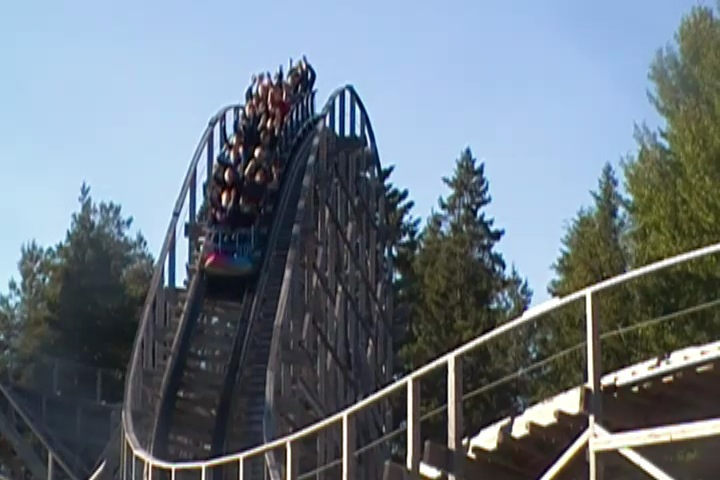

| |
Thunderbird Review

We're here at Power Park. Today, we're here to review Thunderbird, a really good GCI and possibly the best coaster in the park. It was without a doubt, the best coaster in the park when I rode it. But they've added Junker since then, and I have no idea how good it is. Who knows. Maybe it's really good. You pull down the orange lap bar and away we go. You roll around a turn before climbing up the lifthill. Up and up you climb. Yeah, there's no good view, but that doesn't matter here since we're on a...No time to babble on and on now. We've reached the top of the lifthill and are now heading down the first drop. It's a really fun first drop, that really seems to give you a lot of speed. You then rise up into a big sweeping turn. Yeah, we've lost some speed in the process, but that's not a problem since we now get to go through a bunch of laterals. You just literally keep turning and turning. You're pinned to the side of your seat laughing, when suddenly, we go down another drop. This catches us by surprise and even offers some airtime. And suddenly, we rise through another bunny hop, again offering mild airtime, but we fly under the brake run, which adds some really great head chopper effects. We then turn to the right, getting some more good laterals while rising up going through another fun GCI turnaround, before dipping down and getting another good pop of airtime. We then rise up and get some airtime before turning to the left, acheiving the ever so awesome airtime & laterals combo. A really good combination. We then turn right and dip back down, acheiving the ever so great GCI combo again. We then get pinned to the side with more laterals as we go through a big sweeping turn before rising up and turning again. We're starting to die a little bit here, but hey. It's still fun. We then go through a series of GCI bunny hops. The first two have the normal pops, but the third one suprises us with some laterals before pinning us through another sweeping turn. Yeah. We're still having fun. Well not for long. We then rise up into the brake run. While not my favorite GCI, this is a really good wooden coaster that seems to have a good mix of just about everything. It maintains its speed really well, has several pops of airtime through the ride, long periods of laterals, and sometimes both at the same time. Either way, check out Thunderbird. It's a really good GCI and one of the star attractions at Power Park. Seriously, if you came this far for a theme park, the most you could do is ride their freaking GCI woodie.
8/10
Location: Power Park
Opened: 2006
Built by: Great Coasters International
Last Ridden: June 26, 2014
I have ridden this exact same ride at the following parks.
Six Flags St. Louis
Thunderbird Photos



Home
|